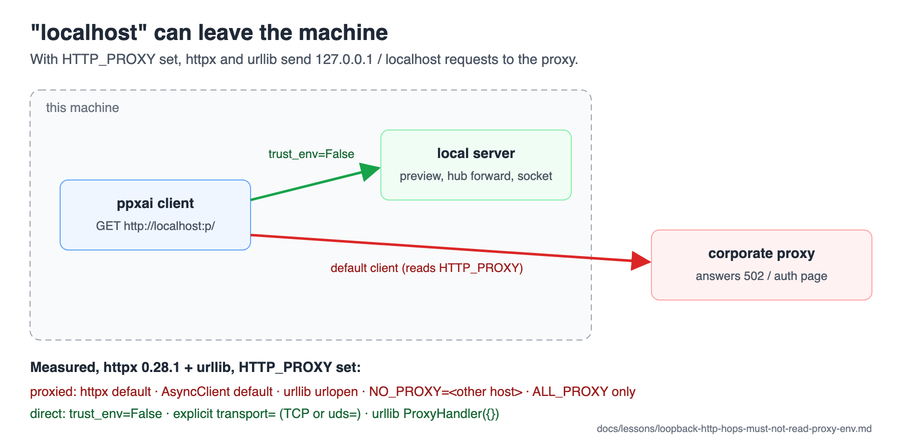

A loopback HTTP hop must not read the proxy environment¶
TL;DR: With HTTP_PROXY (or ALL_PROXY) set, as it is on a corporate
network, httpx and urllib send requests for 127.0.0.1 and localhost to
the proxy. Neither exempts loopback on its own. A client that talks to
another local process (a local server, a preview backend, an SSH forward, a
unix socket) must pass trust_env=False (httpx), or an explicit transport=,
or an empty ProxyHandler (urllib).

(SVG)

Verify with:
grep -rn "trust_env" ppxai/ --include=*.py
# Loopback clients to audit (a URL to localhost/127.0.0.1 built nearby):
grep -rn "http://localhost\|http://127.0.0.1" ppxai/ ppxai-desktop.py scripts/ --include=*.py
Why this trips people up¶
Nobody expects "localhost" to leave the machine, and on a developer's
network HTTP_PROXY is usually unset, so everything works. Behind a
corporate proxy the same code fails, and not always loudly: the proxy
answers (often a 502 or an auth page), so a readiness poll that accepts any
response reports "up" for a server that does not exist.
Measured with httpx 0.28.1 and urllib (Python 3.11), HTTP_PROXY pointed at a
recording stand-in proxy (2026-09-29):
| Client | Proxied? |
|---|---|
httpx default, http://127.0.0.1:<p>/ or http://localhost:<p>/ |
yes |
same, with NO_PROXY set to an unrelated host |
yes |
same, with only ALL_PROXY set |
yes |
httpx.AsyncClient default, http://localhost:<p>/ |
yes |
urllib urlopen("http://127.0.0.1:<p>/") |
yes |
httpx with trust_env=False |
no |
urllib build_opener(ProxyHandler({})).open(...) |
no |
httpx with an explicit transport= (TCP or uds=) |
no (0.28 mounts no env proxies then), but see the TLS trap below |
httpx default with NO_PROXY=localhost,127.0.0.1 |
no, but that is the user's environment, not the code's |
A test trap: urllib.request.urlopen() builds a global opener on its
first call and caches it (urllib.request._opener), and its ProxyHandler
reads the proxy environment only then. A test that monkeypatches
HTTP_PROXY and calls urlopen() therefore sees whatever environment the
FIRST urlopen() in that process saw, which depends on test order under
xdist. Use urllib.request.build_opener().open(...) (a fresh opener reads
the environment now) when a test needs the proxy environment to apply.
Found as an order-dependent failure in this lesson's own control test.
The TLS trap: a passed-in transport ignores the client's trust_env.
httpx.AsyncClient(transport=httpx.AsyncHTTPTransport(), trust_env=False)
still reads the environment: the transport has its own trust_env,
default True, and at construction it loads SSL_CERT_FILE into an SSL
context, even for a plain-HTTP or unix-socket hop. With that variable
naming a missing file (a CA bundle path carried over from another
machine), construction raises FileNotFoundError. The hub proxy answered
500 to every request, and the two unix-socket health probes caught it as an
OSError and reported a live server as not answering (found 2026-09-30).
Pass trust_env=False to the transport as well as the client. Pinned by
tests/test_loopback_clients_ignore_tls_env.py.
What's actually true¶
Guarded (2026-09-29):
ppxai/server/routes/remote_hub.py(the ADR 0013 hub proxy) andppxai/remote/manager.py(its/healthprobes):trust_env=False, with a comment saying why (96e7f58e).ppxai/server/registry.py,socket_answers: an explicitHTTPTransport(uds=...). Safe from the proxy on httpx 0.28, but not fromSSL_CERT_FILE(the TLS trap above); since 2026-09-30 both the transport and the client passtrust_env=False, as do the transports inremote_hub.pyandremote/manager.py.
Guarded since 2026-09-29 (were open when this lesson was written; pinned by
tests/test_loopback_clients_ignore_proxy.py, which points each client at a
real local server with HTTP_PROXY set to a recording stand-in proxy):
ppxai/server/routes/preview.py— the/previewproxy tohttp://localhost:<port>/…:trust_env=False. Before, behind a proxy, every proxied request went to the corporate proxy.ppxai/engine/preview_backend.py,wait_for_port—trust_env=False. Before, any response counted as ready, so the proxy's own reply read as "backend is up".ppxai-desktop.py,wait_for_server(urllib) — an opener with an emptyProxyHandler. Before, it got the proxy's reply, not 200, and gave up after 30 s.scripts/gateway-smoke.pyandscripts/trial-task-lifecycle.py(urllib) — skip the proxy for a loopback--base-urlonly; a remote gateway still goes through the environment's proxy.
Guarded since 2026-10-01, loopback-only because the URL comes from config
and may name a hosted API (trust_env=not is_loopback_url(url), from
ppxai/config/network.py; same test file):
ppxai/engine/providers/base.py— an OpenAI-compatible provider'sbase_url(local vLLM, Ollama, LM Studio, an SSH forward).ppxai/engine/multimodal_ops.py,caption_image— the vision sidecar.ppxai/commands/doctor.py,_probe_provider_endpoint—/doctor's/modelsprobe.
The OpenAI-native, Gemini and Anthropic providers have no configurable
base_url (fixed hosted endpoints), so they keep the proxy environment.
What to do: give every loopback or unix-socket client trust_env=False
(httpx; on the transport too, when it passes transport=) or urllib.request.build_opener(urllib.request.ProxyHandler({}))
(urllib). Outbound clients are the other case: they keep the proxy
environment and take the shared TLS context, see
outbound-http-clients-take-the-shared-tls-context.md.
Related¶
- ADR 0013 S5 and
docs/plan-ssh-remote-backend.mdphase 4 — the rule as first written for the hub - loopback-ui-auth-exemption.md — the other way "loopback" is special in this server